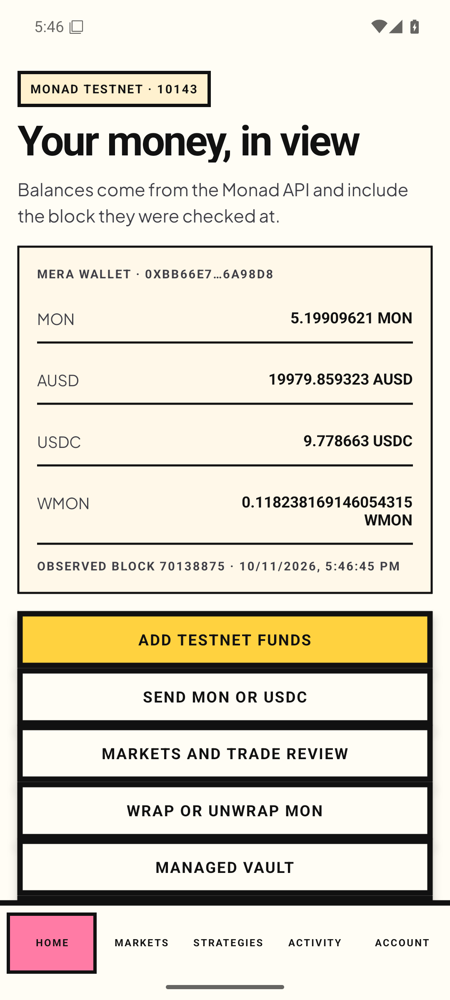
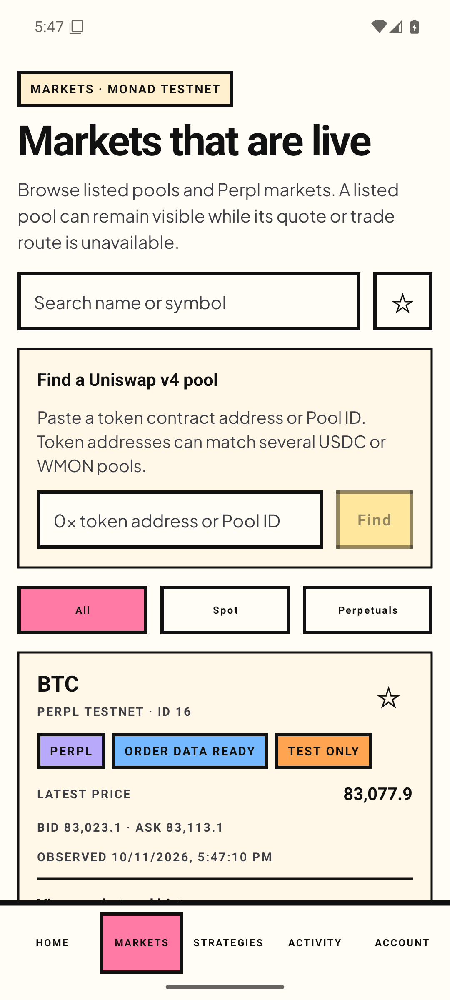
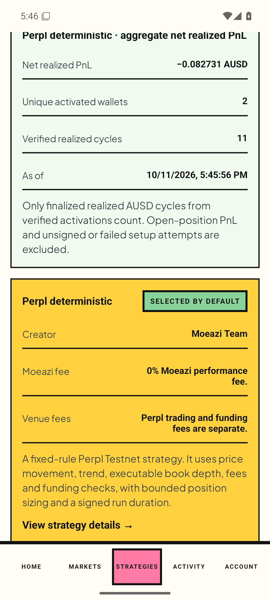
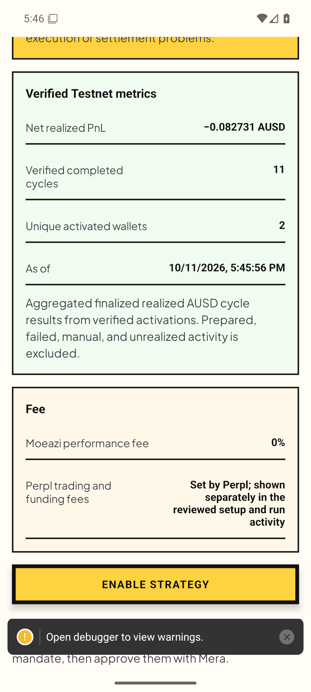
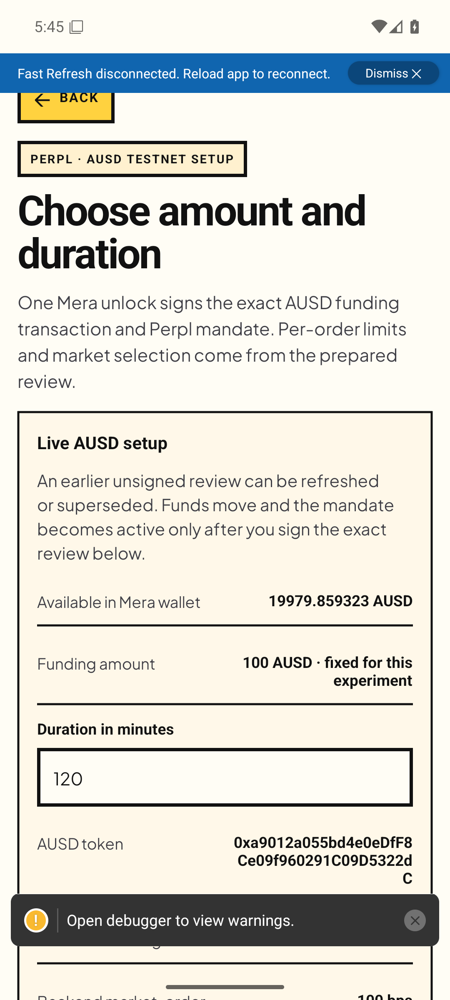
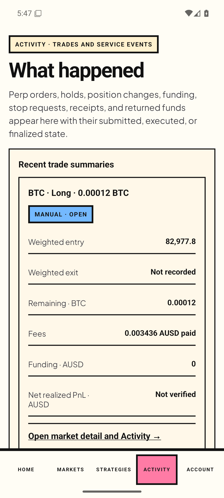
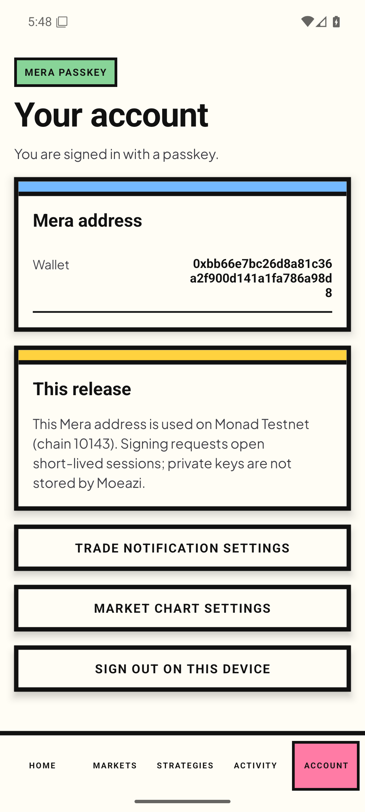

Balance first
Show test AUSD and fee MON as separate, understandable balances.
Keep Moeazi’s bold, tactile identity. Make the first useful thing clear: what is in the wallet, what it means on testnet, and what a person can safely do next.
Show test AUSD and fee MON as separate, understandable balances.
Guide funding and autonomy in a short, resumable sequence.
Explain amount, destination, permission, and risk before every signature.
Moeazi 1.8 (9), Android API 36 emulator, 1080 × 2400 at density 420. Screenshots were captured on 11 Oct 2026 around 17:45–17:48 Riyadh time. These are screen observations, not usability findings.







Scope: read-only navigation. No signing, funding, swaps, or trades were performed. The evidence manifest explains partial-scroll coverage and the Perpl debugger overlay.
This 35-destination table preserves the 11 October 2026 pre-migration research snapshot. Current native navigation is data-driven: migration-inventory.js records 34 stack bindings, five mode-aware tabs and User-only branch screens; verify-hub.mjs checks those against RootNavigator.tsx, tab bindings and screen files. Static source checks do not claim native visual or interaction acceptance.
Competitor behavior below comes from current first-party product notes, support pages and platform guidance; no competitor app was installed or directly observed. Publication dates distinguish 2026 releases from the 2025 Material foundation and older guidance. See the source ledger and evidence-to-test rationale, the exact journey coverage matrix and the required strategy base and optional-module boundary. All nine current Node/source checks pass. Visual quality, native behavior and user comprehension remain unverified.
The handoff maps prototype flows to existing capabilities, highlights data gaps, and keeps mode selection separate from authentication and backend authorization.
The protocol targets five adults with no prior trading experience across age groups. Target: at least four complete the main simulated flows without coaching. No human validation has been claimed or conducted.
All nine current Node checks pass for reducer, view, journey, guards, controller, consent, layout, funding/required-base behavior and hub structure. Earlier browser samples belong to V1. Browser preview access was blocked, so no visual pass is claimed. Native handoff, full accessibility and participant sessions remain pending.
Open validation log ↗